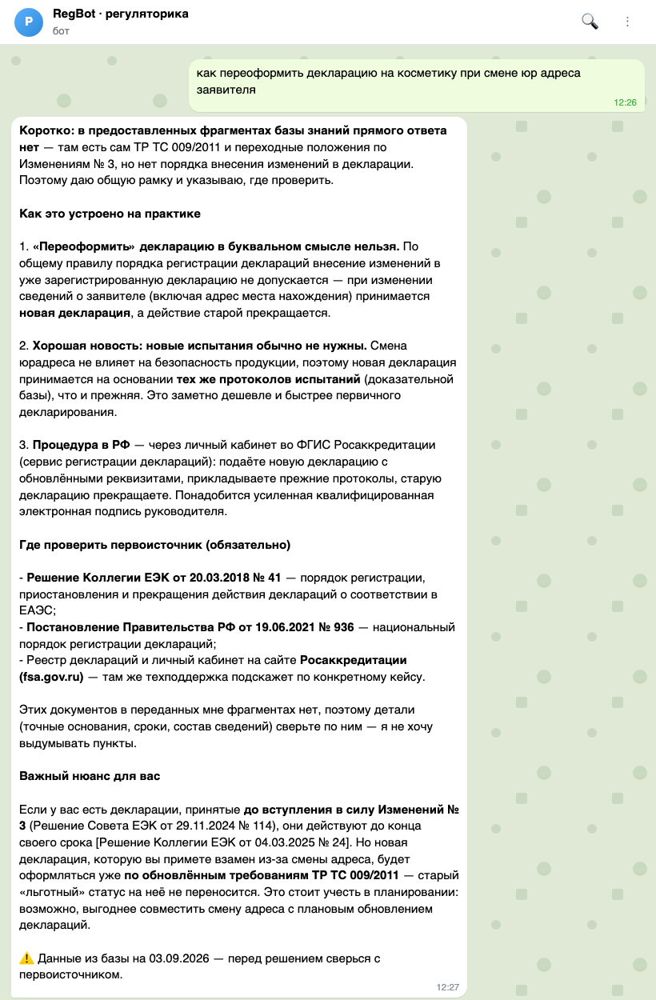

Telegram-бот для продуктолога: медизделия, косметика, таможня. Корпус нормативных актов, SQLite FTS5, LLM без API-ключей.

Вопрос текстом, ответ по базе знаний с ссылками на первоисточник и предупреждением о дате сборки.
ЕАЭС, РФ, таможня: тексты и манифесты с номерами, датами и редакциями.
LLM превращает вопрос в формальные запросы, FTS5 отдаёт фрагменты, LLM отвечает только из них.
/ru и /decl: Росздравнадзор и Росаккредитация, кэш на сутки или прямая ссылка.
RSS отраслевых источников, LLM отбирает важное для продукции.
/start отправляет админу карточку с кнопками, белый список в базе.
Один процесс long polling, одна база SQLite с полнотекстовым индексом, LLM через подписку ChatGPT.
flowchart TB U[Продуктолог в Telegram] --> B[app.bot<br/>long polling, доступ, кнопки] B --> S[app.search] S --> Q[LLM: вопрос → 2-4 формальных запроса] Q --> F[(SQLite FTS5<br/>чанки корпуса)] F --> A[LLM: ответ только из фрагментов + ссылки] A --> B B --> R[app.registries<br/>РЗН · ФСА, кэш 24 ч] M[app.monitor, понедельник 08:30] --> RSS[RSS Альта · РЗН] --> D[LLM-дайджест] --> B I[app.ingest] --> F C[corpus/raw + манифесты] --> I
Настоящие данные; названия компаний и брендов заменены.
LLM-движок: Codex CLI через подписку ChatGPT, с остыванием при лимитах и честным сообщением, если движок исчерпан.
Промпт запрещает отвечать вне фрагментов, каждый ответ со ссылкой и предупреждением о дате сборки базы.
Проверки через LLM-агента были дорогими и ненадёжными; заменены на кэш и прямые ссылки для ручной сверки.